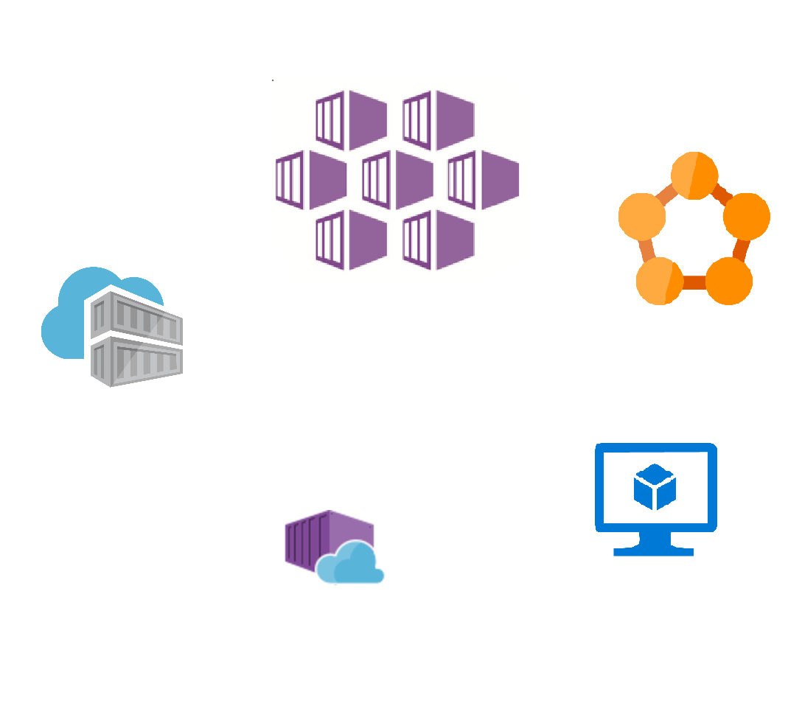

Azure Container Instances
Kristian Johannessen
Lyntalekveld om DevOps og Sky
Disposisjon
Containere i Azure
ACR
ASC
Web Apps for Linux
Service Fabric
ACI
Hva det er
Hvordan det funker
Vise: enkelt eksempel, multi container group, samt mounted file share
Orchestration
Enkle funksjoner i ACI
Connectors
Demo (video?)
Ha en Cluster kjørende i ACS
Bruke connector til å deploye eksempel fra https://github.com/Azure/aci-connector-k8s
Containere i Azure
Containere i Azure
Containere i Azure

Containere i Azure
Containere i Azure
Containere i Azure
Azure Container Instances
Serverless
?
✓
Ingen infrastruktur
–
Ingen skalering
–
Betaler for bruk
✗
Eventbasert